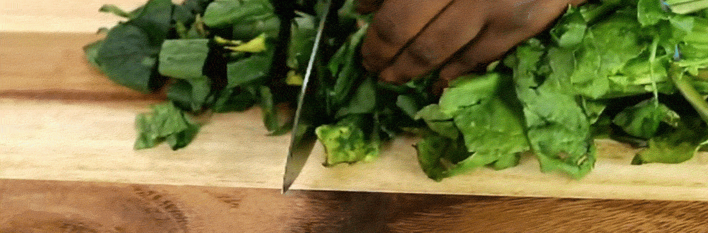

INSTRUCTIONS
1. Boil cow skin, beef, tripe and stockfish and season with salt, thyme and chopped onions. Taste for seasoning and add water to soften.

2. Fry or grill your meats and ensure they are not too dry (This step is optional)
3. Blend your peppers and preferably coarsely.

4. Chop your vegetables, they shrink so you should chop a lot.
5. Pour hot water to steam and wash off dirt. Add cold water to stop the cooking process.
6. Pour palm il in your pot and add chopped onion after it heats up (2mins).

7. Add locust beans and crayfish powder for like 30 seconds. After this, add pepper mix.

8. Add bouillon cubes and salt.

9. Add all protein as desired and mix. Leave to fry for about 20 mins.

10. After 5 mins, add your washed vegetables and stir to combine. Finish off with crayfish powder and simmer for just a minute.

Content of Recipe and video source for gifs have been copied here.
Other also liked...
Banga Soup

Igbo White Soup

Egusi Soup

Nigerian Jollof Rice